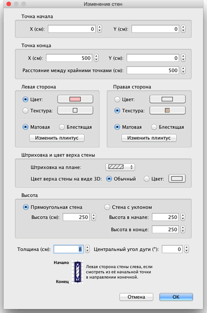

| Редактирование стен | |||
Вы можете редактировать положение и длину стен дома с помощью мышки или меню План > Изменить стены.... Когда одна стена выделена, Вы можете изменить начальную и конечную точки. Индикатором размера можно определить конечную точку.
|

|
Когда курсор находится над точкой начала или конца, то появляется индикатор, означающий, что Вы можете двигать эту точку. При нажатии кнопки мышки, появится окно с размером стены. Изменяя размеры стены на плане, можно сразу видеть, как изменяется вид 3D. Параметры стены могут быть изменены. Для этого используйте двойной клик на объекте, или используйте пункт меню План > Изменить стены... после выбора стены.  В панели параметров стены можно изменить координаты точек начала и конца, цвет и текстуру левой и правой сторон стен, толщину и высоту стен. |
|